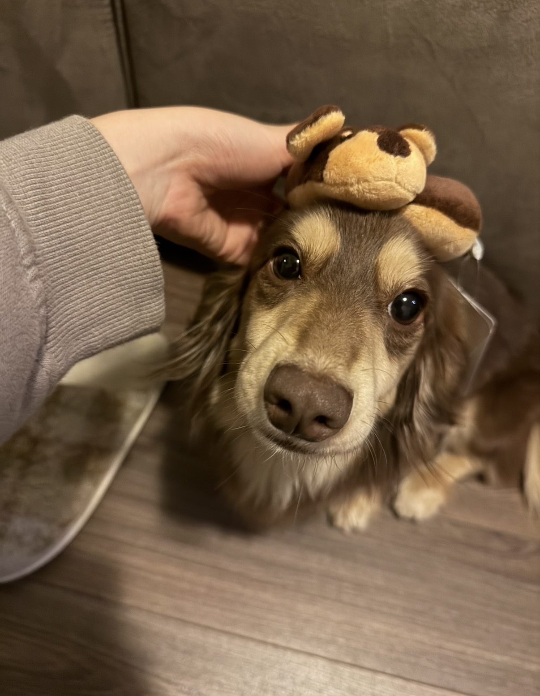
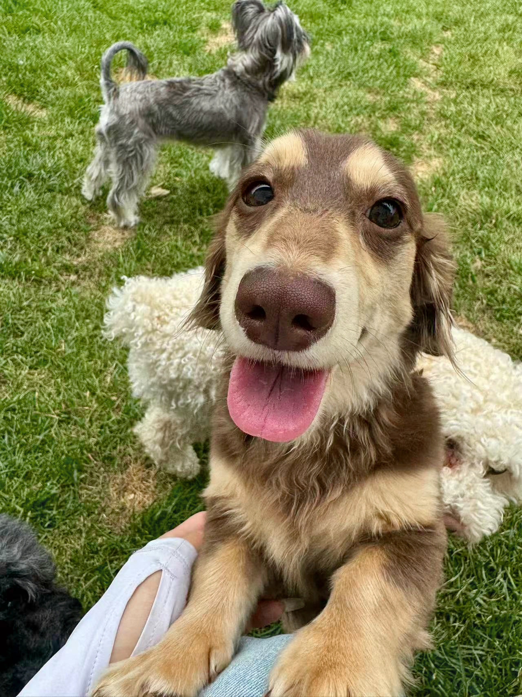
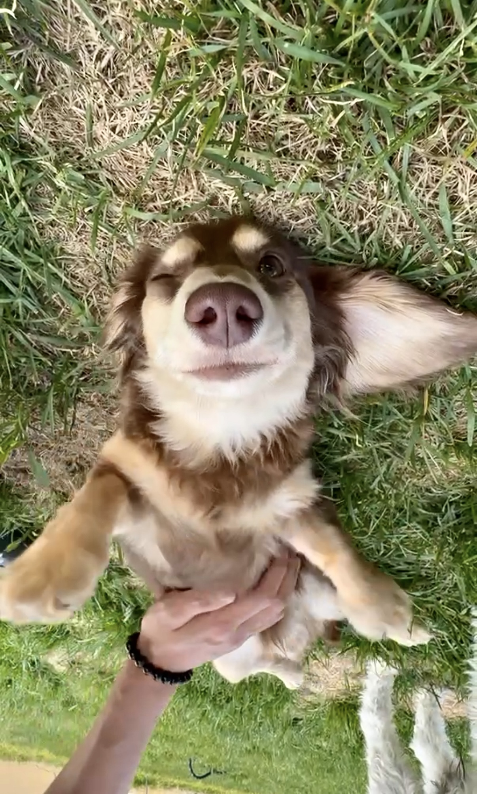
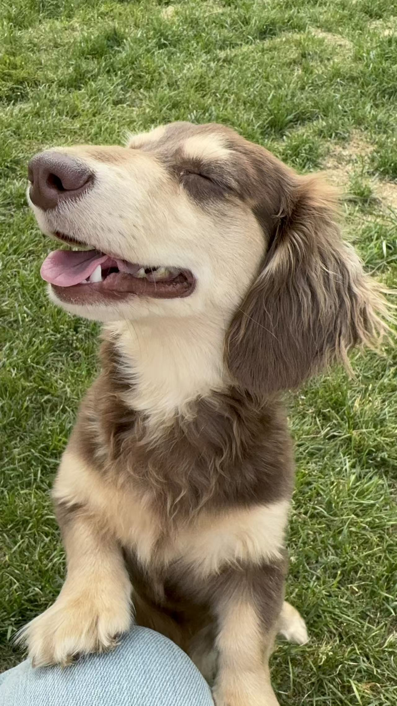

A little corner of the internet for my playful dachshund.
01 / Meet the little star
Hello, I'm Jakie!
Jakie is my dachshund: a little dog with short legs,
a long body, and a big personality. He is playful,
curious, and always ready to make an ordinary day
a little more interesting.
This website is a collection of the small moments
that make life with him special.




Scroll sideways to see more of Jakie.
02 / Little moments
Everyday Adventures
Life with Jakie is never boring. His playful personality
brings plenty of surprises, and even a simple day at
home can turn into a little adventure.
Here, I celebrate his curious nature, his mischievous
moments, and the joy he brings to my everyday life.
03 / A growing collection
Favourite Things
What makes Jakie's tail wag? This space is for
collecting his favourite things as I discover them.